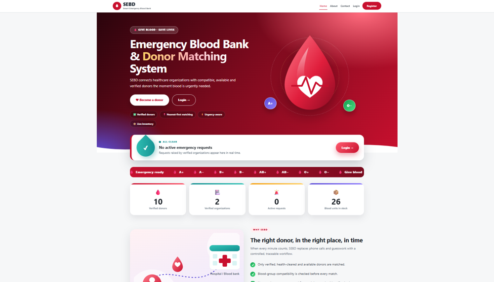
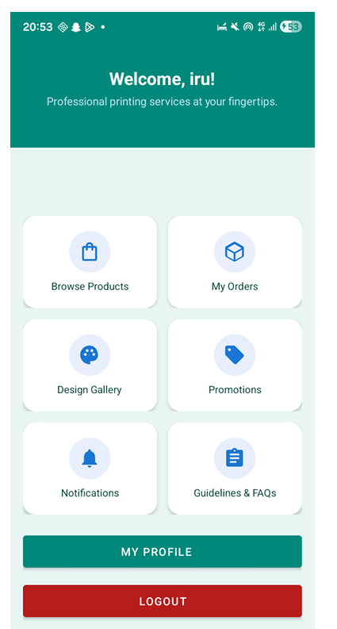

Hello, I'm
Hewa Palihakkarage Udeshi Irushika Shamodani
Banking Internship Applicant | Banking Operations & Customer Service
Computing and Software Engineering Higher Diploma programme completer (final results pending), with academic experience in database management, SQL, quality assurance and structured documentation. Seeking to begin a banking career through the Sampath Bank Internship Programme.
Professional Summary
I have completed the Higher Diploma in Computing and Software Engineering (Cardiff Metropolitan University, UK, via ICBT Campus); my final results are pending.
Through individual and group academic projects, I have developed skills in data handling, information verification, error identification and record keeping, working with database-driven applications and preparing test documentation. I have good working knowledge of Microsoft Word and Excel, and good written English.
I am analytical and detail-oriented, with a willingness to learn banking operations, customer service and professional workplace practices.
Core Competencies
Data & Information Management
Documentation & Record Management
Analytical & Quality Skills
Professional Skills
Language
Relevant Academic Projects
Projects completed during my Higher Diploma, showing accuracy, responsibility, documentation and work with data.

Higher Diploma Final Year Group Project · Role: Quality Assurance
Smart Emergency Blood Bank & Donor Matching System
I took primary responsibility for Quality Assurance. I independently prepared test plans and test cases from documented requirements, performed functional and end-to-end workflow testing across the Donor, Healthcare Organization, Admin and Public modules, and verified accuracy by comparing actual behaviour with expected results. I identified, documented and reported issues, and also contributed to UI design and supported development of several modules.

Individual Academic Project
NWSDB Water Billing Management System
A database-driven billing system with separate customer and staff portals. I implemented bill generation, meter reading management and payment history, managed data using SQL Server database operations, and added user authentication with role-based access control. I also built a separate payment partner application to simulate the bill payment workflow.

Individual Academic Project
GlobeTrek Adventures – Travel Booking and Management System
I designed a relational database for users, packages, bookings, payments and inquiries, and built Customer, Staff and Admin interfaces with registration, authentication and booking management, plus an administrative dashboard showing booking, revenue, user and package statistics.
Individual Academic Project
Green Basket – Grocery Management System
A console-based product and inventory management system with separate Sales Assistant and Store Manager access, file-based data storage and low-stock alerts.
Individual Academic Project
Tour Mate – Cab Service Management System
A console-based system with sales management features to record and manage customer transactions, plus vehicle and pricing information and user authentication.

Individual Academic Project
PrintXpress – Android Printing Service Application
An Android application with document upload, printing order placement and payment-related functionality.
Certifications
Database Management Systems & SQL
SuhuruSara (LK Domain Registry)
March 2026
Web Design Using WordPress
SuhuruSara (LK Domain Registry)
2025
Contact
I am seeking a place in the Sampath Bank Internship Programme to begin my banking career. Feel free to get in touch.
- Email irsuhika@gmail.com
- LinkedIn linkedin.com/in/u-irushika-se
- GitHub github.com/Irushika-se